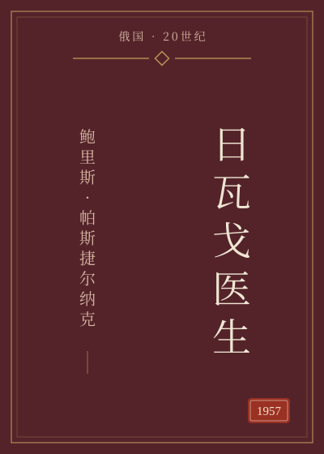
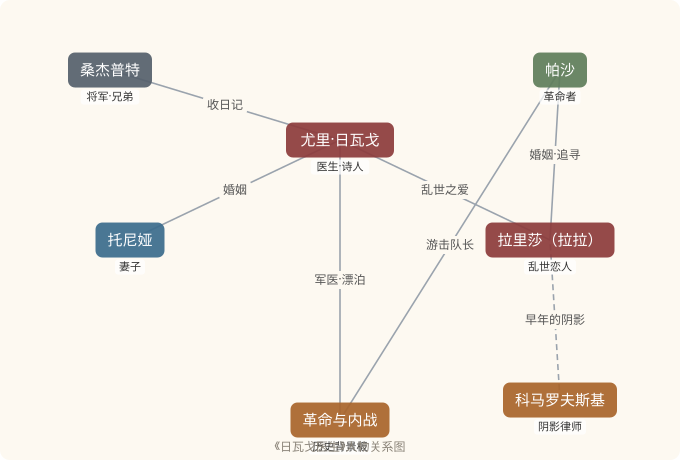

日瓦戈医生
一、基本信息
| 作者 | 帕斯捷尔纳克 |
|---|---|
| 成书/出版 | 1957年意大利出版（Britannica）；1988年苏联《新世界》连载（Britannica） Boris Pasternak — Encyclopaedia Britannica（百科全书） |
| 国别/地区 | 俄国 |
| 时代 | 现当代 · 20世纪 |
| 体裁 | 长篇小说（历史小说+诗集） |
| 语言 | 俄语 |

《日瓦戈医生》人物关系图（人物关系图）
二、创作背景
出版风波（Britannica）：被苏联出版界以'诽谤性方式表现十月革命'为由拒绝（'a libelous manner' of representing the October Revolution），1957年由意大利出版商 Feltrinelli 出版；1958年诺贝尔奖后苏联发起批判运动，作者被开除出作协并被迫拒奖；1988年小说才在苏联出版（Britannica）。
故事背景：1905年革命—一战—二月与十月革命—内战—新经济政策—大清洗——一部知识分子的'俄国史诗'（通说）。
改编：1965年大卫·里恩电影获多项奥斯卡（'Somewhere My Love'主题曲——通说待核）。
三、内容脉络
孤儿与医学：幼年丧父的尤里·日瓦戈被格罗梅科家收养，学医；少年时与'拉拉'（拉里莎）的初遇是命运的伏笔（通说）。
革命中的漂泊：一战军医、乌拉尔乡间（瓦里金诺）、被游击队'征用'两年、莫斯科的贫困——医生见证革命的全部理想与恐怖（通说）。
拉拉之爱：与拉里莎·安季波娃（帕沙之妻、革命者'斯特列利尼科夫'之妻）的乱世情缘——聚散于乌拉尔的雪原与火车（通说）。
结局：日瓦戈街头心脏病发死去；拉拉在追悼会后被消失（劳改营）；同父异母兄弟（将军）收走日记；末章附日瓦戈的17首诗——'生活，我的姊妹'主题的回响（通说）。
四、主要人物表
| 人物 | 身份 | 说明 |
|---|---|---|
| 尤里·日瓦戈 | 医生·诗人 | '在革命中保存感受力的人'——Britannica：an epic following Yury Zhivago, a physician and poet, from roughly 1900 through the revolutions...to his death in 1928 |
| 拉里莎（拉拉） | 医生之妻·教师 | 被科马罗夫斯基玷污、与帕沙错爱、与日瓦戈乱世相恋的女性（通说） |
| 帕沙·安季波夫 | 拉拉之夫·游击队长 | '斯特列利尼科夫'——革命吞噬的理想主义者 |
| 托尼娅 | 日瓦戈之妻 | 温厚而最终流亡巴黎的姐弟兼配偶 |
| 科马罗夫斯基 | 律师·恶人 | 贯穿三代的阴影人物 |
| 桑杰普特将军 | 日瓦戈兄弟 | 苏联体制内的'保护者'——收走日记（通说） |
五、主题与艺术特点
- 个人与历史：革命被称为'出色的手术'——但个人感受力在历史手术台上能否幸存？（通说解读）
- 基督教底色：日瓦戈的'复活'主题诗——俄国东正教情感的世俗化（通说）。
- 诗歌与散文的双重体：结尾17首诗是小说的'心脏'（通说）。
- 知识分子的命运：Britannica 记小说因描写十月革命'诽谤性'而遭禁——作品与作者命运互为镜像。
六、影响与评论
- Britannica（Pasternak 条目）：1957意大利出版、1958诺奖与拒奖、1988苏联出版——完整事件链。
Boris Pasternak — Encyclopaedia Britannica（百科全书） - 改编：1965年大卫·里恩电影（多项奥斯卡——通说待核）。
Boris Pasternak — Encyclopaedia Britannica（百科全书） - 冷战符号：'日瓦戈事件'成为西方反苏宣传与苏联内部文化政治的焦点（通说待核）。
Boris Pasternak — Encyclopaedia Britannica（百科全书） - 中译：力冈、冀刚译本（漓江出版社，通说待核）与蓝英年译本（人民文学，通说待核）。
Boris Pasternak — Encyclopaedia Britannica（百科全书）
七、阅读建议
难点
- 人物众多、时代跨度50年——先读附录年表。
- 散文与诗的双重文体——第17首诗是理解钥匙。
- 俄国革命史（1905/1917/内战）背景需要补充。
- 蓝英年、张秉衡译《日瓦戈医生》（人民文学出版社，通说待核）：通行。
- 力冈、冀刚译本（漓江出版社，通说待核）：早期全译。
- 英译：Max Hayward & Manya Harari（1958，通说待核）与 Richard Pevear & Larissa Volokhonsky（2010）。
通读两卷 → 精读乌拉尔瓦里金诺段与末卷17首诗 → 对照电影（1965）→ 读帕斯捷尔纳克事件史料（Britannica 链条）。
八、待核实
- Feltrinelli 1957年11月出版细节（' smuggling manuscript'——CIA 传播说，通说）待核。
- 蓝英年/力冈译本信息待核。
- 1965电影奥斯卡获奖清单待核。
- 17首诗目录与《哈姆雷特》诗逐字核对待完成。